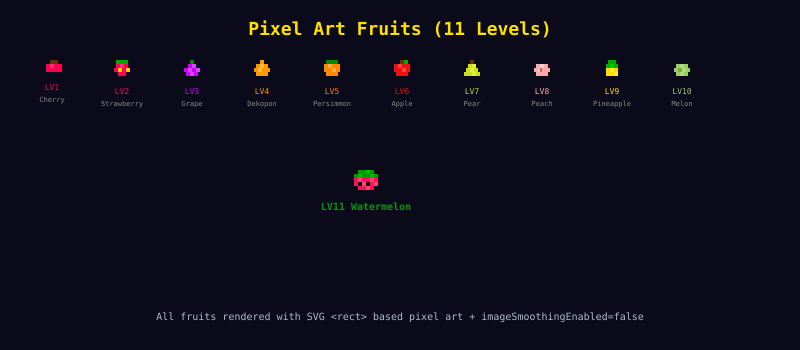

Asset generation
시각 자산은 역할을 나눠 만들었습니다
Gemini는 11개 과일 SVG 같은 강점 영역에만 제한적으로 사용했습니다.
43
멀티 모델 전략
Opus: 구조 설계, 오케스트레이션
Sonnet: 구현, 디버깅
GPT 5.4: 코드 리뷰, 화면 캡처 이미지 분석
Gemini 3.1 Pro: SVG 디자인과 비주얼 생성
GPT 5.3 Codex Spark: 커밋 작성
즉 "모델 하나를 신봉"한 게 아니라, 강점에 맞게 배치
